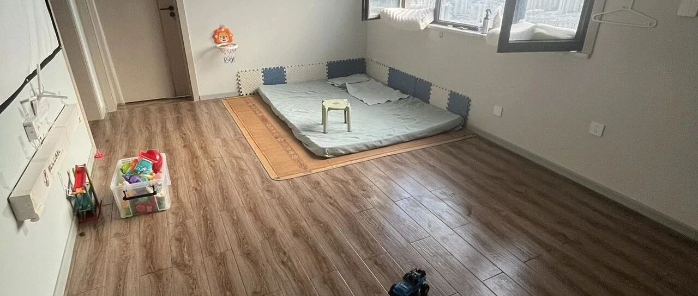

断舍离！我发现家里东西越少能量越多
点击关注 秋秋在分享
一起实现财务自由退休
大家好，我是秋秋呀。
从北京回来之后开始大扫除，本来我们就是来威海旅居租的房子，东西不多。
除了家具家电（我们也不带着）、日用品（到了再买的），我和大老王一起50多件衣服、宝宝用品，可以说是“空无一物”。

我反而觉得这太棒了！
先不说每天卫生很好打扫，就是对自己的物品十分清晰的感觉都很爽！
比如我们旅行，一个双肩包就搞定，现在有孩子还要带辅食锅的情况下，也只是多一个行李箱。
我还挺推荐这个小锅的，租房子自己做饭的话很方便，带着也不大：

你们看到的我家的调料🧂也就上面那些。
一瓶亚麻籽油一瓶油醋汁一瓶生抽搞定。
当然，像我喜欢看的书、文具也还留着，除此之外，次卧就房东原本的床，啥也没了。

主卧除了衣橱就是我和大老王的办公区，清清爽爽。

这样东西很少，家里空间就很大，每天都不被物品干扰。
宝宝会爬的时候我们买了爬爬垫全屋铺，会走了就直接在木地板上玩，每天睡前打扫一次。
我推荐那种一次性除螨的拖把，用完一张丢一张，很适合打扫卫生。
当然，宝宝的玩具也不多，就算每天弄的到处都是也不怕，晚上一个收纳盒就全搞定。

不爱玩的玩具我都会定期闲鱼给他出掉。
这里！我觉得买一些质量好的玩具很重要。
一是孩子入口，考虑安全问题。
二是玩具大多数只能陪他几个月，比如刚出生会玩黑白卡、摇铃，大点了会玩积木平衡车，质量好的话方便转手。
他小月龄的东西我都卖光了。


那我会觉得东西少，不温馨吗？
我觉得“家”的概念是一家人健健康康整整齐齐。
如果东西混乱经常吵架，即使拥有琳琅满目的物品也不会觉得幸福。
我理想的情况是住别墅和大平层，是想空间大更开阔，却不想东西多杂乱。
另外，我们经常会出去玩，觉得世界很大，家里东西少也不会没有玩的。
我的家，还有960万平方公里的神州大地。

温馨的感觉还有一点，靠息息相关的东西营造。
像我们的四件套就一直带着用，旅行也给宝宝带包单包被，带锅做饭，不会直接睡在酒店床上只吃外卖。
用的洗衣液也一直是一个牌子的，这样衣服味道都是一贯的。
包括沐浴露护手霜洗发水护发精油，也都是我一直喜欢的。
还有一点很重要！
这次是回到山东旅居，就是能更好的吃到家乡味道。不存在东西少孤单冷清客居他乡的感觉。
像我们这边夏天，都很爱捉“蝉”吃，我觉得很有童年味道。

没错，这个是用来吃的～
那关于旅居用品的问题，我也回答过很多次。
包括衣服，我几年前就写过极简清单，现在看也更新换代好多次了，思路却依旧能用：
大家针对性的问题还有啥可以留言？
想看的话，我抽空再把旅居必备物品篇写一写。
期待下次再见面吧～